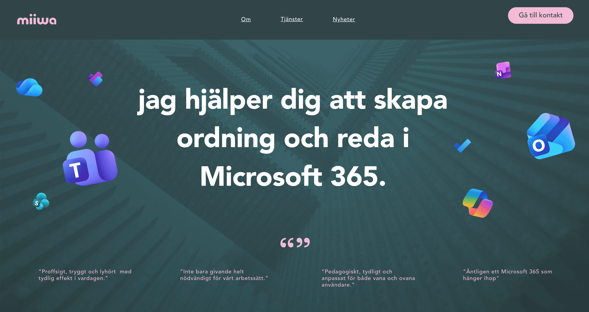
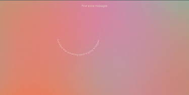
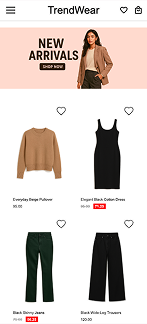
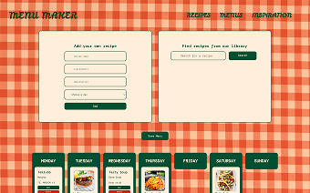

I am currently studying Frontend development at Hyper Island. Coming from a background of art, design and healthcare I am passionate of uniting these worlds with tech. My background in pedagogy and work with adults with disabilities has given me insight into how people interact with systems not always designed for their needs, and created a strong personal interest in accessibility in technology.
With over five years of study in art, design, and craft, I bring a strong visual and creative perspective to my work. I’m particularly interested in applying this background to coding, where aesthetics, usability, and structure come together.
Born in Sundsvall, northern (or mid depending on who you ask) Sweden, I have lived in Stockholm for 10 years. Outside of tech I like creating things - ceramic, textile stuff, painting, graphic design, food, bread and cakes! Im semi-outdorsy and wont say no to a sauna and coldplunge.

Client collaboration with Hyper Island and Miiwa Nordic AB. The website is created with Wix Studio and Figma. My contributions included being the main client contact person, collaborating on the design and implementing the design in Wix.

Small project for fun. Delivering important messages for you to find along the screen. Created with HTML, CSS and JavaScript.

Mobile-first landing page for a fictional clothing brand.
The project focuses on creating a simple shopping experience
where users can browse products, view sales, and add items to
a favorites list.
This project was built as part of a Hyper Island
course with a strong focus on Agile workflows, UX design, and
collaborative frontend development.

A React-based web application that helps users to build personalized weekly menus by creating recipes, dragging them into a weekly planner, and saving their favorite menu combinations. Get recipe inspiration from an external API and save recipes for future use.